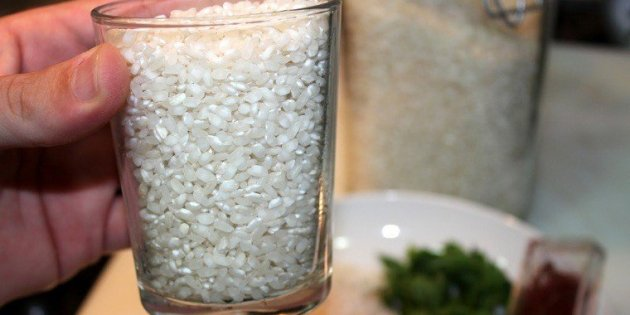
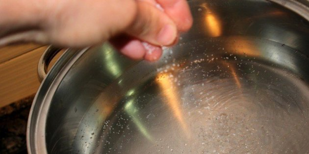
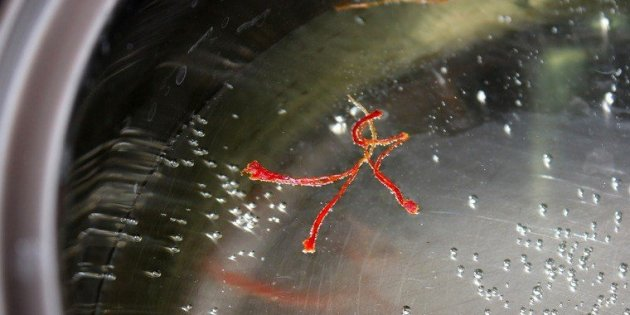
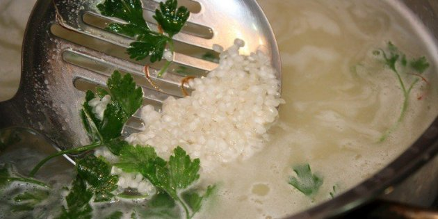
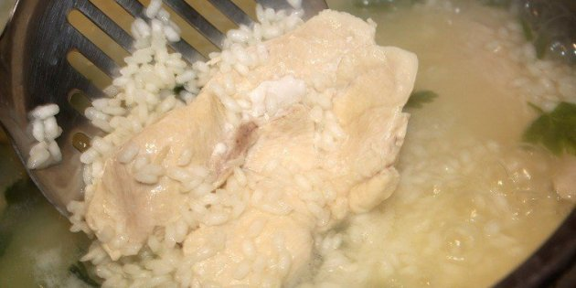
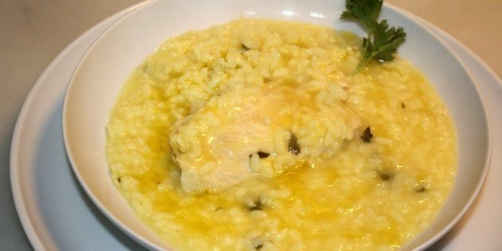
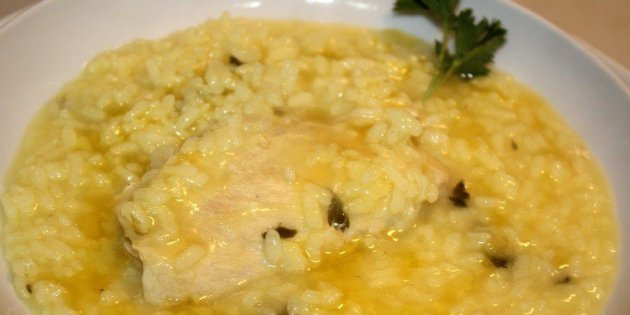
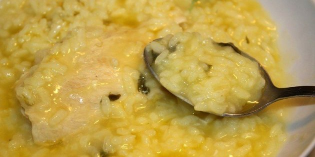

Prepara els ingredients
Pesa l'arròs i l'aigua, és important
Sala l'aigua
I afegeix el safrà també. Més que sabor li aportarà un coloret més atractiu que el blanc de l'arròs.
Quan l'aigua bulli afegeix-hi l'arròs i deixa-ho fer uns 18 minuts aproximadament.
Com t'he comentat, pots incorporar a la cocció un tros de pollastre o de lluç per enriquir el plat. Tot dependrà de si et trobes bé de la panxa o no.
I ja el pots servir, amb un raig d'oli d'oliva per sobre.
És important que quedi ben regat amb aigua de cocció, ja que aquest líquid és realment el que talla els problemes estomacals.
Cullera, poc a poc i bona lletra. Bon Profit!